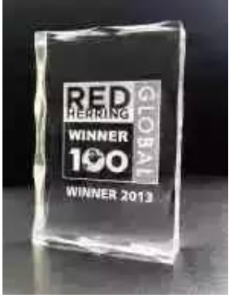
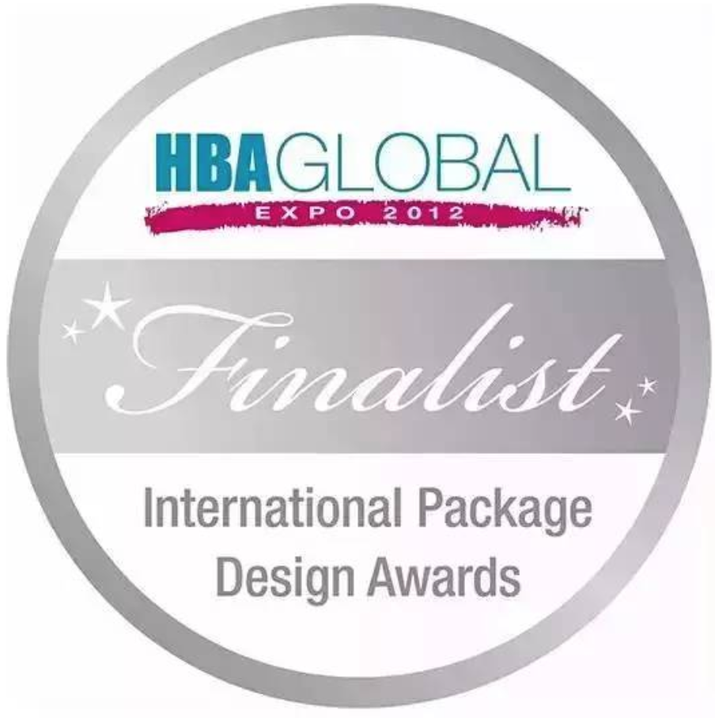
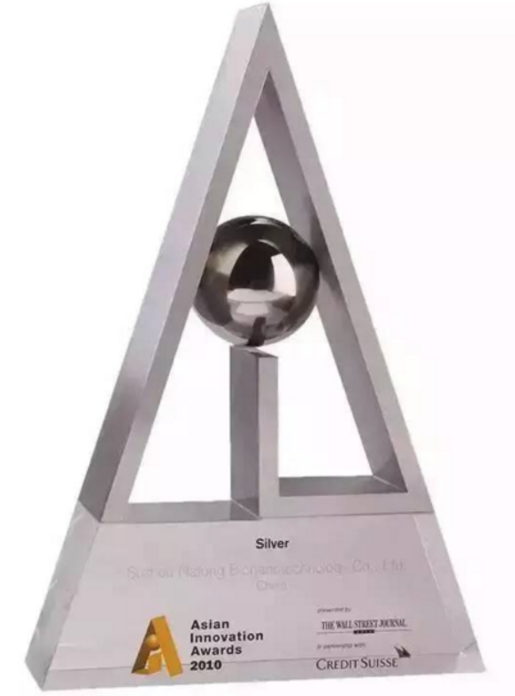
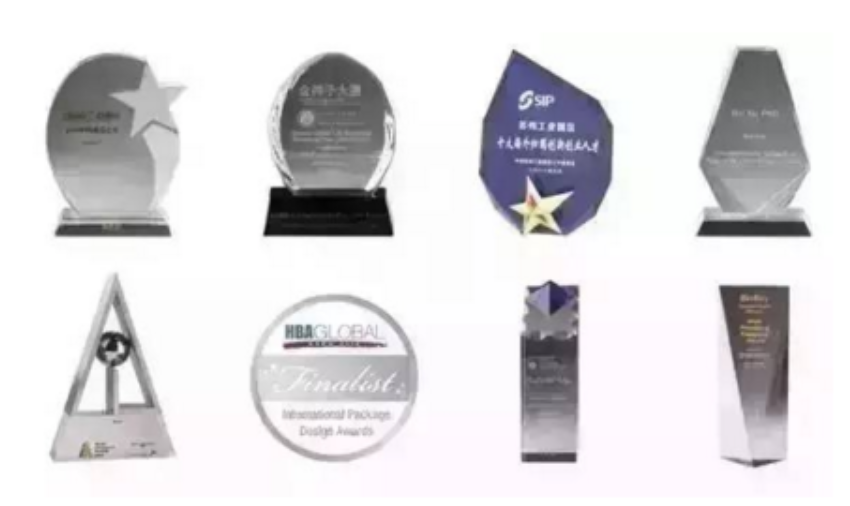

纳晶奖项荣誉
1、2015年7月，成为中华全国工商业联合会美容化妆品业商会成立20周年战略合作伙伴
2、2015年4月，荣获中国医药互联网创业大赛前十强
3、2013年11月，荣获2013年度红鲱鱼(Red Herring)全球科技创新100强
4、2013年9月，荣获2013年度红鲱鱼(Red Herring)亚洲科技创新100强
5、2012年，与丝芙兰产品一起入围美国HBA全球美容化妆品展美容工具类前三名
6、2012徐百博士被评为“最可爱的园区人”荣誉奖项。纳晶入围美国HBA美容设计奖
7、2011 美国硅谷高科技创业高峰会创业大赛第一名
8、2010成功入围“亚洲创新奖”并最终获得银奖
9、2010年度《创业邦》中国创新成长企业100强
10、2010年6月与IBM和微软的产品一起成功入围《华尔街日报》与瑞士信贷联合举办的“亚洲创新奖”决赛并最终获得银奖， 成为国内唯一一家获奖的本土企业
11、2010年4月获得大中华区生物医药金种子大赛优胜奖
12、2009年9月获得DEMO CHINA创新中国大赛获奖企业
13、2009年苏州纳通获得第二届BIOBAY投资论坛“最具投资潜力奖”
